![IM]()
BIOMECÁNICA (1009)
Objetivo(s) del curso:
El alumno conocerá los aspectos del funcionamiento mecánico del cuerpo humano, de tal forma que pueda plantear modelos de los diferentes sistemas, orientado al desarrollo de prótesis y sistemas artificiales sustitutos y de apoyo.
1. Conceptos generales de biomecánica.
1.1 Leyes de la mecánica.
BIOMECÁNICA
La Biomecánica constituye una disciplina de carácter interdisciplinario que integra, de manera sistemática, los principios de la mecánica clásica en el estudio detallado de los sistemas biológicos, particularmente del ser humano, pero también de los animales.
Su propósito esencial consiste en comprender cómo los organismos vivos generan, regulan y controlan el movimiento en interacción con su entorno físico.
Este análisis abarca tanto la evaluación de fuerzas internas como las tensiones musculares, las cargas articulares, la resistencia viscoelástica de los tejidos blandos y la coordinación neuromuscular como de fuerzas externas, entre ellas la gravedad, la fricción, la resistencia de fluidos y la reacción del suelo.
Estas interacciones dinámicas permiten explicar cómo se producen, modifican o estabilizan los movimientos humanos, así como su eficiencia y limitaciones.
Dependiendo del campo de aplicación, la biomecánica adopta matices particulares sin perder su esencia. Para la Ciencia de la Salud, es una herramienta clínica que permite comprender cómo los movimientos normales o patológicos afectan la salud, apoyando diagnósticos y tratamientos. Desde la perspectiva de la ingeniería, constituye la base para diseñar y perfeccionar dispositivos como prótesis, exoesqueletos o modelos computacionales que simulan el movimiento humano. Para la Actividad Deportiva, representa un medio para optimizar la técnica, incrementar el rendimiento y prevenir lesiones mediante el análisis detallado de los gestos deportivos. En el Ámbito de la Rehabilitación, la biomecánica se traduce en un marco conceptual para planificar programas de recuperación funcional, diseñar ejercicios terapéuticos y adaptar estrategias a las necesidades de cada paciente. Finalmente, para la Biología, la biomecánica explica cómo las estructuras y funciones de los organismos evolucionan y se adaptan, iluminando la locomoción y las estrategias motoras desde una perspectiva evolutiva.
Todas estas concepciones convergen en un mismo núcleo:
La aplicación de las leyes de la mecánica para explicar el comportamiento de los seres vivos en relación con su movimiento y sus funciones estructurales.
Así, la biomecánica puede entenderse como un espacio de encuentro entre la medicina, la ingeniería, el deporte, la fisioterapia rehabilitación y la biología, que permite integrar conocimientos diversos en un mismo lenguaje científico.
En cada uno de estos enfoques, el objetivo sigue siendo común:
Comprender el movimiento en su totalidad, desde los mecanismos internos de los tejidos y músculos hasta las fuerzas externas que condicionan la interacción del cuerpo con el entorno.
MECÁNICA
La Mecánica, rama fundamental de la física, proporciona el andamiaje teórico que sustenta el análisis biomecánico y se subdivide en:
· Cinemática: se centra en la descripción matemática, gráfica y computacional del movimiento en términos de trayectoria, desplazamiento, velocidad, aceleración y tiempo, sin atender directamente a las fuerzas causales. Es indispensable en el análisis de técnicas deportivas, patrones de marcha, movimientos ocupacionales y rehabilitación funcional.
· Cinética: aborda las causas del movimiento mediante la cuantificación de fuerzas, momentos de fuerza, torques y potencia mecánica. Estudia la relación entre magnitudes dinámicas y permite correlacionar las cargas aplicadas con las respuestas estructurales del organismo, aportando información esencial para prevenir lesiones y diseñar prótesis y ortesis.
· Estática: analiza sistemas en equilibrio, ya sea en reposo absoluto o en movimiento uniforme, donde las sumatorias vectoriales de fuerzas y momentos son nulas. Resulta fundamental para la ergonomía, la biomecánica ocupacional, la evaluación postural y el estudio de soportes de carga en actividades cotidianas y laborales.
· Dinámica: estudia los cuerpos sometidos a aceleraciones producto de fuerzas no equilibradas. Su aplicación es crucial en la modelación de gestos deportivos de alta complejidad, análisis de caídas, movimientos de impacto, vibraciones corporales y desplazamientos no lineales.
LINEA DE TIEMPO DE LA BIOMECÁNICA
Época Griega y Romana
Génesis del pensamiento biomecánico
Aristóteles
Aristóteles (384–322 a.C.) es considerado uno de los pioneros en reflexionar de manera sistemática sobre el movimiento humano y animal.
Aunque sus investigaciones se basaron más en observaciones cualitativas que en experimentación cuantitativa, introdujo la noción de que el movimiento podía ser comprendido bajo leyes universales.
Este planteamiento abrió el camino hacia futuras interpretaciones mecánicas del cuerpo humano. Sus aportaciones funcionaron como un puente entre la filosofía natural y el desarrollo posterior de la ciencia aplicada.
Además, sus reflexiones sobre locomoción, biomecánica animal y función muscular influyeron en la medicina, la fisiología y la teoría del movimiento durante siglos.
Aristóteles no solo describió el movimiento, sino que también estableció conexiones con la ética y la filosofía, considerando la actividad física como parte integral de la vida buena y equilibrada.
Describió por primera vez la acción de los músculos y el proceso de la marcha:
"El animal que se mueve hace su cambio de posición presionando lo que esta debajo de el“
Hipócrates
Hipócrates (460–370 a.C.) es conocido como el “Padre de la Medicina”, fue determinante en la evolución del conocimiento anatómico y fisiológico. En sus textos médicos enfatizó la relación entre postura, equilibrio corporal y salud, y ofreció descripciones sobre lesiones musculoesqueléticas, proponiendo métodos de tratamiento y rehabilitación.
Planteó la importancia de la alineación corporal como factor de bienestar y destacó el papel del ejercicio físico como herramienta terapéutica, preventiva y rehabilitadora.
Su enfoque holístico consideraba al cuerpo humano como una totalidad integrada, introduciendo la idea de que la función depende estrechamente de la forma.
Este concepto sería, siglos más tarde, uno de los pilares centrales de la biomecánica y la fisiología moderna. Asimismo, Hipócrates sentó precedentes en la medicina deportiva al reconocer el valor de la actividad física en la recuperación de lesiones y en la prevención de enfermedades.
Demuestra un profundo conocimiento de la relación entre el movimiento y el músculo, al que él denomina carne, y recomienda el movimiento en el tratamiento de enfermedades, en concreto caminatas, para evitar la atrofia y combatir la obesidad.
Galeno
Galeno (129–200 d.C.) fue un médico y filósofo de gran influencia en la antigüedad, cuyos estudios dominaron la enseñanza médica durante más de un milenio.
Basándose en disecciones animales, realizó descripciones detalladas del papel de músculos, tendones, ligamentos y articulaciones en el movimiento.
Aunque algunas de sus conclusiones presentaban errores debido a la ausencia de disecciones humanas, sus escritos consolidaron el vínculo entre anatomía y fisiología.
Galeno subrayó la importancia de los músculos como motores del movimiento, contribuyendo al desarrollo de un marco conceptual que sirvió de referencia en medicina, anatomía y pensamiento biomecánico medieval.
La influencia de Galeno fue tan amplia que sus textos se convirtieron en una base doctrinal que perduró hasta el Renacimiento, siendo la referencia más consultada en universidades y escuelas médicas.
Ensayo De Motu Musculorum estableció la diferencia entre Nervios motores y sensitivos y Músculos sensitivos Músculos agonistas y antagonistas.
Expuso la anatomía juntamente con la fisiología, pues deseaba describir el cuerpo humano en pleno funcionamiento.
Fue medico de los emperadores Marco Aurelio, Cómodo y Séptimo Severo
Edad Media
Durante la Edad Media, gran parte del conocimiento clásico fue preservado y transmitido gracias a eruditos árabes y europeos.
Centros de traducción como Bagdad, Toledo y Córdoba desempeñaron un papel crucial en la conservación de las obras de Aristóteles, Hipócrates y Galeno.
Aunque la experimentación científica fue limitada en este período, los comentarios y reinterpretaciones de los textos clásicos mantuvieron vigente la tradición médica y filosófica.
La biomecánica aún no existía como disciplina formal, pero el legado galénico, mantenido en la práctica médica y en las universidades medievales, permitió que la idea del cuerpo como un sistema regido por principios mecánicos y fisiológicos se mantuviera viva.
Este proceso intelectual fue esencial para que, en la Edad Moderna, los estudiosos pudieran recuperar y ampliar esos conocimientos con un enfoque más experimental y técnico.
Edad Moderna
Consolidación del método científico aplicado al cuerpo humano.
Leonardo Da Vinci
Leonardo da Vinci (1452–1519), artista, ingeniero y anatomista, revolucionó la representación del cuerpo humano a través de sus estudios anatómicos basados en disecciones. Sus cuadernos incluyen ilustraciones minuciosas de músculos, huesos y articulaciones, concebidos como sistemas mecánicos.
Da Vinci propuso que el cuerpo funcionaba como una máquina compuesta por palancas, poleas y engranajes biológicos, visión que lo coloca como precursor de la biomecánica moderna.
Su enfoque interdisciplinario, que integraba arte, ciencia e ingeniería, transformó la anatomía de meramente descriptiva a funcional y mecánica.
Además, planteó principios sobre el equilibrio, la locomoción y la fuerza muscular que se adelantaron a su tiempo y que hoy resultan reconocidos como aportaciones fundamentales en la evolución del pensamiento biomecánico.
Galileo Galilei
Galileo Galilei (1564–1642) aportó un cambio radical al estudio del movimiento al introducir el método experimental y la cuantificación matemática. Sus investigaciones en cinemática y dinámica, como el estudio de cuerpos en caída libre, la aceleración constante y las trayectorias parabólicas, permitieron establecer principios fundamentales para comprender los fenómenos físicos. La introducción de la medición precisa de aceleraciones y velocidades cambió la forma en que se analizaban los movimientos, influyendo directamente en la física mecánica y preparando el terreno para la aplicación de modelos cuantitativos en el estudio del movimiento humano. Galileo puso de manifiesto que los fenómenos naturales podían ser descritos matemáticamente, lo que representó un salto cualitativo en la forma de entender el movimiento y abrió las puertas a la biomecánica científica.
Isaac Newton
Isaac Newton (1643–1727) formuló las Leyes de la Mecánica, consideradas la base conceptual de la biomecánica y de la física clásica:
Leyes de Newton de la Mecánica
Las Leyes de Newton constituyen los pilares epistemológicos de la biomecánica moderna y han sido adoptadas como referentes universales en el análisis de los fenómenos de movimiento:
Primera Ley de Newton (Ley de la Inercia)
Un cuerpo conserva su estado de reposo o movimiento rectilíneo uniforme mientras no actúe sobre él una fuerza neta externa. Este principio se refleja en fenómenos cotidianos como el equilibrio postural o el inicio de la locomoción.
Segunda Ley de Newton (Ley de la Fuerza-Aceleración)
La aceleración de un cuerpo es directamente proporcional a la magnitud de la fuerza neta aplicada e inversamente proporcional a su masa. Esta ley constituye la base matemática que permite cuantificar la dinámica humana en múltiples contextos.
Tercera Ley de Newton (Ley de la Acción-Reacción)
A toda fuerza ejercida corresponde otra de igual magnitud y dirección opuesta. Este principio se manifiesta, por ejemplo, en la propulsión del cuerpo durante la marcha, en el empuje contra el suelo en la carrera o en la flotación y nado en medios acuáticos.
Giovani Alfonso Borelli
Giovani Alfonso Borelli (1608–1679), considerado el “padre de la biomecánica moderna”, aplicó principios matemáticos y físicos al estudio del cuerpo humano en su obra De Motu Animalium. Propuso que los músculos eran motores que transmitían energía a través de palancas óseas y que los huesos y articulaciones funcionaban como sistemas mecánicos de soporte y movimiento.
Borelli fue pionero en introducir un enfoque mecanicista en la fisiología del movimiento, transformando la interpretación del cuerpo humano de un ente vitalista a una máquina susceptible de análisis científico. Su obra integró la biología con la matemática, estableciendo una base metodológica para la biomecánica. Además, aplicó el análisis cuantitativo a la locomoción y a la mecánica de órganos, adelantándose en siglos a los modelos biomecánicos computacionales actuales.
Niels Stensen
Niels Stensen (1638–1686), científico y anatomista danés, realizó aportes fundamentales a la anatomía y fisiología muscular. Estudió el proceso de contracción muscular con una aproximación experimental y describió estructuras anatómicas con rigor científico.
Aunque sus aportaciones fueron menos difundidas que las de Borelli, desempeñaron un papel esencial en el desarrollo posterior de la anatomía funcional y en la comprensión de los mecanismos internos del movimiento humano. Sus descripciones sobre la organización de fibras musculares y su análisis de la función de los músculos en la dinámica corporal constituyeron avances notables que influyeron en generaciones posteriores de investigadores.
Edad Contemporánea
Siglo XIX
Durante el siglo XIX, la biomecánica experimentó un proceso de consolidación experimental bajo la influencia de la fisiología y la física aplicada. En este período se llevaron a cabo las primeras mediciones sistemáticas de fuerzas musculares y se diseñaron aparatos de registro de movimientos.
La invención de la fotografía permitió el análisis de secuencias de movimiento, y el trabajo de Eadweard Muybridge aportó un registro visual sin precedentes sobre locomoción humana y animal.
Por su parte, Étienne-Jules Marey, mediante la cronofotografía, consiguió cuantificar la marcha y analizar gestos deportivos, inaugurando el análisis científico del movimiento. Estos avances produjeron un corpus empírico que, sumado a los modelos teóricos, fortaleció el estudio biomecánico.
Además, el siglo XIX vio la integración de la física en la medicina, con la creación de nuevos instrumentos de medición que ampliaron las posibilidades de experimentación.
Siglo XX
En el siglo XX, la biomecánica se consolidó como disciplina científica autónoma e interdisciplinaria. El desarrollo tecnológico fue clave: cámaras de alta velocidad, plataformas de fuerza para cuantificar la reacción del suelo, electromiografía para registrar la actividad eléctrica de los músculos y sistemas computarizados de captura de movimiento.
Estos avances permitieron estudiar la locomoción, el gesto deportivo, la rehabilitación física y la ergonomía con una precisión sin precedentes.
La introducción de la simulación computacional abrió nuevas posibilidades en el diseño de prótesis, exoesqueletos, entrenamientos deportivos y programas de rehabilitación personalizada.
La biomecánica pasó a convertirse en un área estratégica que conecta la medicina, la ingeniería, la educación física y la robótica, contribuyendo tanto al bienestar humano como a la innovación tecnológica.
Durante este siglo, también se establecieron asociaciones internacionales y revistas científicas especializadas que consolidaron su identidad académica.
El siglo XX marcó la transición de una disciplina en consolidación hacia un campo con identidad científica plena, aplicable al rendimiento deportivo, la salud pública y el diseño de tecnologías biomédicas avanzadas.
BIOMECÁNICA VERSUS KINESIOLOGÍA
La relación entre biomecánica y kinesiología a menudo genera desacuerdos entre quienes estudian el movimiento humano, aunque sus definiciones y desarrollos históricos son similares y paralelos.
Kinesiología
Puede ser un término general que describe el estudio científico del movimiento humano desde perspectivas anatómicas, fisiológicas, psicológicas o mecánicas.
Diversas disciplinas y departamentos de educación física y ciencia del movimiento han adoptado este término.
También puede describir el contenido de una clase donde se evalúa el movimiento humano examinando su fuente y características.
El enfoque de estas clases puede variar significativamente, desde anatomía funcional hasta biomecánica estricta, dependiendo de la universidad.
Históricamente, los cursos de kinesiología se centraron en el sistema musculoesquelético, la eficiencia del movimiento desde un punto de vista anatómico, y las acciones articulares y musculares en movimientos simples y complejos.
Los análisis kinesiológicos tradicionales son generalmente cualitativos, implicando la observación del movimiento para desglosar capacidades e identificar contribuciones musculares.
La kinesiología, etimológicamente, proviene de los términos griegos kinein (movimiento) y logos (tratado), definiéndose como el estudio de la conducta motora de todos los organismos vivos.
Su uso es más frecuente en la literatura francesa, alemana o española que en la inglesa. Se considera que la cinesiología es anterior a la biomecánica en su aspecto terminológico y aplicado.
Se ha nutrido de la anatomía, la mecánica, la fisiología y la psicología, aplicándose en áreas como el deporte, la danza, el ejercicio, la ortopedia, la terapéutica y la industria.
Biomecánica
En el contexto de los textos proporcionados, la biomecánica se utiliza como un término general que engloba contenido previamente cubierto en cursos de kinesiología, además de los avances propios de la biomecánica.
Se desarrolló como área de estudio en Norteamérica durante las décadas de 1960 y 1970, extrayendo su contenido de la mecánica, una rama de la física.
La biomecánica se define como el estudio de la estructura y función de los sistemas biológicos mediante los métodos de la mecánica. Otra definición la describe como el estudio de las fuerzas que actúan sobre y dentro de un cuerpo, y los efectos de estas fuerzas en tejidos, fluidos o materiales, con fines de diagnóstico, tratamiento o investigación.
Es un campo de estudio cuantitativo dentro de las ciencias del ejercicio, que integra conceptos básicos de anatomía, física, cálculo y fisiología para el estudio del movimiento humano.
Aunque enfatiza lo cuantitativo, también busca ser útil para quienes tienen conocimientos matemáticos limitados.
Un análisis biomecánico evalúa el movimiento de un organismo vivo y el efecto de las fuerzas sobre él.
Puede ser cualitativo (observar y describir el movimiento) o cuantitativo (medir algún aspecto del movimiento).
Relación y Distinción
En la primera mitad del siglo XX, biomecánica y kinesiología eran sinónimos, pero ahora kinesiología es la disciplina académica más amplia del estudio del movimiento humano, mientras que la biomecánica es una diciplina central dentro de ella, enfocada en la mecánica.
La biomecánica es la aplicación de los principios físicos para explicar el movimiento humano, desarrollando estrategias metodológicas específicas para su estudio e investigación. No es solo un subproducto de la física o la medicina, sino una especialidad propia de las Ciencias de la Actividad Física.
El estudio científico de la actividad deportiva implica la fisiología, la neurofisiología, el comportamiento motor y la biomecánica.
La fisiología se enfoca en los procesos energéticos y la coordinación intrínseca, mientras que la biomecánica adquiere relevancia cuando la técnica es un factor determinante en el resultado deportivo, como en el salto con pértiga o la gimnasia.
CINEMÁTICA VERSUS CINÉTICA
Estas son dos ramas fundamentales de la mecánica que se utilizan para analizar el movimiento humano, aunque con enfoques distintos:
Cinemática
Se enfoca en las características del movimiento desde una perspectiva espacial y temporal, sin hacer referencia a las fuerzas que lo causan.
Implica la descripción del movimiento para determinar qué tan rápido, alto o lejos se mueve un objeto.
Los componentes de interés en un análisis cinemático son la posición, la velocidad y la aceleración.
Puede ser lineal (movimiento traslacional) o angular (movimiento rotacional).
Un análisis cinemático puede ser cualitativo (descripción no numérica basada en observación directa) o cuantitativo (análisis numérico basado en datos recopilados).
Cinética
Es el área de estudio que examina las fuerzas que actúan sobre un sistema (como el cuerpo humano) o cualquier objeto.
A diferencia de la cinemática, la cinética se centra en la causa del movimiento.
El análisis cinético es más complicado que el cinemático, ya que las fuerzas no pueden verse directamente, solo sus efectos. La evaluación precisa de las fuerzas requiere instrumentación especializada.
Las fuerzas son cruciales porque son las causantes de todos nuestros movimientos y del mantenimiento de posiciones o posturas.
También puede ser lineal (estudio de la causa de la traslación) o angular (estudio de la causa de la rotación).
La cinética lineal se basa en el concepto de fuerza, mientras que la cinética angular se basa en el concepto de torque o momento de fuerza.
Relación
Es esencial examinar tanto los componentes cinemáticos como cinéticos para comprender todos los aspectos de un movimiento.
Cualquier aceleración de una extremidad, objeto o cuerpo humano es el resultado de una fuerza aplicada en un punto, instante, magnitud y duración específicos.
ESTÁTICA VERSUS DINÁMICA
Estática
Es la rama de la mecánica que examina los sistemas que no están en movimiento (en reposo) o que se mueven a una velocidad constante.
Los sistemas estáticos se consideran en equilibrio, un estado de balance donde no hay aceleración, ya que las fuerzas que causan o detienen el movimiento se neutralizan entre sí.
Es útil para determinar el estrés sobre estructuras anatómicas, la magnitud de las fuerzas musculares y la fuerza que resultaría en la pérdida de equilibrio.
Un análisis estático usualmente emplea técnicas de cinética para identificar las fuerzas y el sitio de aplicación de las fuerzas que mantienen una postura, posición o velocidad constante.
También se pueden aplicar análisis cinemáticos en la estática para corroborar la ausencia de aceleración.
Dinámica
Es la rama de la mecánica que se utiliza para evaluar el movimiento en sistemas que están en aceleración. La dinámica utiliza un enfoque cinemático, cinético o ambos para analizar el movimiento.
El caso dinámico es más complicado que el estático, ya que se deben considerar las aceleraciones lineales y las propiedades de inercia de los segmentos corporales.
La segunda ley de Newton (ΣF = ma) es la base para el análisis dinámico, donde la aceleración resultante es un valor distinto de cero.
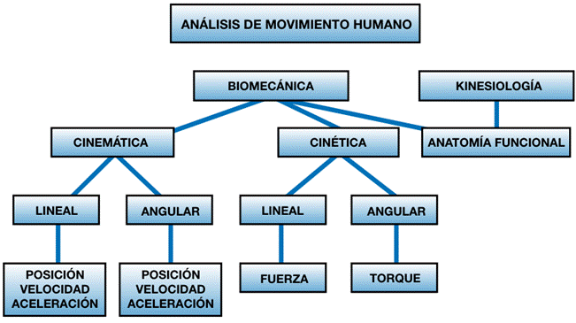
1.2 Vocabulario anatómico.
ANATOMÍA Y FISIOLOGIA HUMANA
Anatomía, Del griego anatome, que significa corte y dirección. Fue definido por Aristóteles como el conocimiento de la estructura humana por medio de la disección.
Fisiología, (fhysis: natural) Ciencia que estudia las funciones del ser humano.
TIPO DE ESTUDIOS ANATÓMICO
Anatomía Macroscópico: Mayor de 0.1 mm
Anatomía Microscópico: Menor de 0.1 mm
· Anatomía Radiológica: Estudio de la estructura por medio de la imagen, estas imágenes son captadas or medios de radiodiagnóstico.
· Anatomía Topográfica o Regional: Es aquella que describe una regio corporal
· Anatomía del Desarrollo o Evolutivo: Es la ciencia que describe la estructura en los diferentes periodos evolutivos.
· Anatomía Comparada: Descripción de la estructura humana comparada con el estudio de otros animales (vertebrados, evidente).
NIVELES DE ORGANICACION EN EL CUERPO HUMANO
o Nivel Químico y Bioquímico: Dependiendo de cómo se organicen las moléculas.
o Nivel Celular: Comporta la unidad básica funcional: la célula. Realiza todas la funciones vitales.
o Nivel de Tejidos: Unidades celulares con función similar, Tejido epitelial, Tejido nervioso, Tejido conjuntivo o conectiva, Tejido muscular.
o Nivel Órgano: Estructura formada por los cuatro tejidos fundamentales con distinta estructuración y con función común.
o Nivel Aparato: Los órganos se unen para realizar una función común o global.
o Nivel Sistema: Esta formado por un conjunto de órganos.
Nivel Organismo - Sistemas
· Sistema osteomuscular: Su función es la locomoción, equilibrio, manipulación, suspensión y además expresa como está la persona corporalmente.
· Sistema cardiovascular: (sangre, corazón, vasos): entre otras cosas transporta nutrientes, hormonas y oxígeno a través de la sangre y también actúa como sistema de defensa.
· Sistema neuroendocrino: Forma una unidad funcional responsable de recoger la información del epitelio, analizar la información (estimulo), después lo integra (lo asocia) y después elige el tipo de respuesta, rápida o fugaz.
· Aparato genital: Tiene como finalidad la reproducción y la continuidad de la especie.
Clasificación del tejido conectivo
Depende de dos factores del grado de diferenciación (especialización), Se distingue un tejido conectivo general y un tejido conectivo especial.
En general va a presenta presentar del tipo laxo o denso según el mayor o menor número de células, así el tejido conectivo laxo tienen gran cantidad de células y pocas fibras y el denso tiene pocas células y muchas fibras.
El principal tipo de tejido conectivo denso va a ser la formación de ligamentos, tendones y fascias o membranas musculares.
En los tejidos especializados, se encuentran principalmente tres tipos
1. Tejido Cartilaginosos
2. Tejido Óseo
3. Tejido Sanguíneo
CARACTERÍSTICAS BIOMECÁNICAS DEL HUESO
La biomecánica del hueso se centra en cómo este tejido resiste las fuerzas externas e internas y cómo responde a la tensión y la deformación.
El hueso, o tejido óseo, es un material biológico notablemente dinámico y resiliente, que exhibe tanto una alta resistencia a la tracción como a la compresión, además de una elasticidad significativa, con una notable combinación de fuerza, rigidez y bajo peso.
Composición Química y Funcional
El tejido óseo se constituye de una matriz de sales inorgánicas y colágeno, con un porcentaje significativo de agua.
· Componente Orgánico: Las fibras de colágeno (una proteína fibrosa) proporcionan fuerza de tensión y elasticidad al hueso.
· Componente Inorgánico: Los minerales, principalmente fosfato de calcio (hidroxiapatita), confieren fuerza de compresión y rigidez.
· Agua: Representa aproximadamente del 25% al 30% del peso total del tejido óseo.
Composición y Estructura Macroscópica del Tejido Óseo
El tejido óseo, o hueso, constituye aproximadamente el 20% del peso corporal total y es la base de la estructura de las articulaciones (uniones) y el sitio de inserción de tendones, ligamentos y músculos.
Composición y Células Óseas
El hueso es un tejido compuesto por elementos orgánicos e inorgánicos que le confieren su característica dureza y fortaleza.
1. Composición Material: La matriz ósea se compone de sales inorgánicas (principalmente calcio y fosfato, que le otorgan rigidez y resistencia a la compresión) y colágeno (un material orgánico que proporciona fuerza de tensión y elasticidad). Aproximadamente el 60% al 70% del tejido es mineral, y el 25% al 30% es agua.
2. Células Óseas: El hueso es un tejido vivo y dinámico, renovándose constantemente. Su remodelación es posible gracias a la actividad de tres tipos principales de células:
o Osteoclastos: Células grandes, multinucleadas, responsables de la resorción ósea y la descomposición del tejido viejo.
o Osteoblastos: Células que producen el hueso nuevo (osteoide) y son responsables de la calcificación.
o Osteocitos: Osteoblastos atrapados en la matriz que actúan como mecanosensores y se comunican para dirigir la actividad de remodelación.
Estructura Macroscópica: Hueso Cortical y Cancellous
El hueso se divide en dos tipos de tejido con arquitecturas distintas, adaptadas a demandas mecánicas específicas:
1. Hueso Cortical (Compacto): Forma la capa externa dura del hueso y el cuerpo de los huesos largos (diáfisis). Posee una baja porosidad (menos del 15%) y una alta densidad, lo que le confiere una gran fortaleza y rigidez. Su estructura está organizada en sistemas de pilares llamados Osteones o sistemas Haversianos, que proporcionan resistencia a cargas longitudinales, especialmente de compresión y tensión.
2. Hueso Cancellous (Esponjoso o Trabecular): Se encuentra en el interior, especialmente en los extremos de los huesos largos (epífisis) y en las vértebras. Se caracteriza por una estructura tipo encaje de trabéculas y una alta porosidad (más del 70%). Aunque es más débil y menos rígido que el hueso cortical, su principal función es la absorción y distribución de energía, lo que lo hace crucial para atenuar las cargas impuestas al sistema esquelético.
Propiedades Mecánicas del Hueso (Relación Tensión-Deformación)
Las propiedades mecánicas del hueso se estudian mediante la relación tensión-deformación, evaluando su comportamiento bajo diferentes tipos de solicitaciones.
Tensión, Deformación y Módulo de Elasticidad
Para comparar estructuras de diferentes tamaños, se utilizan las cantidades escalares de tensión (esfuerzo) y deformación (cambio de forma).
1. Tensión (σ): Se define como la fuerza (F) por unidad de área (A), medida en newtons sobre metro cuadrado (N/m2), o pascal (Pa).
2. Deformación (ε): Es la medida de la deformación resultante causada por la tensión, expresada como un cambio relativo en la longitud del material.
3. Rigidez (Módulo Elástico, k): Es la pendiente de la porción lineal (región elástica) de la curva tensión-deformación y representa la resistencia del material a la deformación.
4. Regiones y Puntos de Falla: Dentro de la curva se distinguen la región elástica (donde el material regresa a su longitud original al retirarse la carga) y la región plástica (donde hay deformación permanente). El punto de vencimiento o punto de fluencia marca la transición a la región plástica, y el punto de fallo o punto de ruptura representa la máxima tensión antes de la ruptura completa.
Comportamiento Anisotrópico y Viscoelástico
El hueso exhibe propiedades mecánicas complejas, que lo diferencian de los materiales elásticos simples:
1. Anisotropía: El hueso es un material anisotrópico, lo que significa que su comportamiento mecánico varía según la dirección en que se aplica la carga. Por ejemplo, es más resistente a cargas longitudinales (como la compresión en huesos largos) que a cargas transversales.
2. Viscoelasticidad: El hueso es un material viscoelástico, lo que implica que su respuesta mecánica depende de la velocidad (tasa) y duración de la aplicación de la carga. A velocidades de carga más altas, el hueso se vuelve más rígido y fuerte, pudiendo absorber más energía antes de la fractura, en comparación con una carga aplicada lentamente.
3. Resiliencia y Fragilidad: El hueso se clasifica como un material que es flexible y débil en comparación con metales o vidrios. Además, exhibe un comportamiento frágil, ya que sufre muy poca deformación plástica antes de la ruptura.
Clasificación de hueso por su forma / estructura
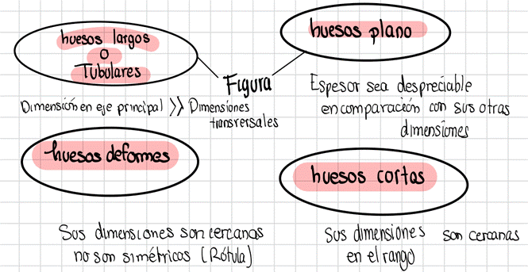
Huesos largos o Tubulares (Diáfisis/zona media, Epífisis/cabeza de los hueso, Metáfisis/cambio de sección)
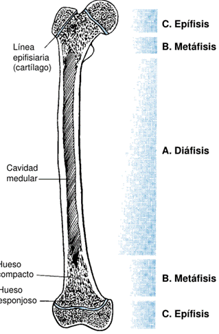
TÉRMINOS ANATÓMICOS
El rigor académico en biomecánica requiere el uso de un vocabulario anatómico estandarizado y reconocido internacionalmente, que permita describir de manera precisa posiciones, direcciones, planos y movimientos del cuerpo humano. Este marco terminológico garantiza la comunicación efectiva entre investigadores, clínicos, terapeutas y profesionales de áreas aplicadas como la fisioterapia, la medicina deportiva y la ingeniería.
Posiciones de Referencia
Posición anatómica: El cuerpo está en posición erecta, cabeza mirando hacia adelante, brazos a los lados del tronco con las palmas hacia adelante, y piernas juntas con los pies apuntando hacia adelante.
Posición fundamental: Similar a la posición anatómica, sirve como punto de referencia para describir los movimientos articulares.
Nombres de los Segmentos Corporales
Esqueleto axial: Comprende la cabeza, cuello y tronco. Representa más del 50% del peso corporal y generalmente se mueve más lento.
Esqueleto apendicular: Incluye las extremidades superiores e inferiores. Los segmentos más distales son más pequeños, se mueven más rápido y son más difíciles de observar.
· Extremidad superior: Brazo (en la articulación del hombro), antebrazo (en la articulación del codo), mano (en la articulación de la muñeca).
· Extremidad inferior: Muslo (en la articulación de la cadera), pierna (en la articulación de la rodilla), pie (en la articulación del tobillo).
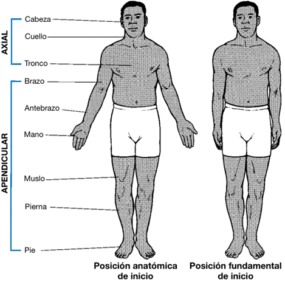
Términos Anatómicos Direccionales
· Medial: Hacia la línea media del cuerpo.
· Lateral: Alejándose de la línea media del cuerpo.
· Proximal: Una posición relativamente cercana a un punto de referencia designado (generalmente el tronco).
· Distal: Una posición relativamente lejana a un punto de referencia designado (generalmente el tronco).
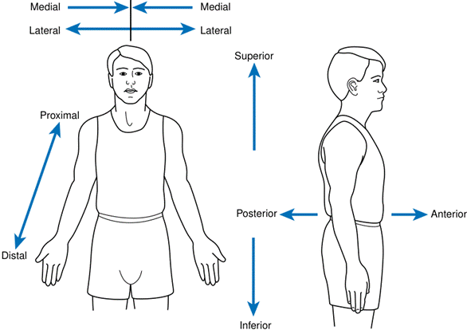
Otros términos como anterior (ventral), posterior (dorsal), superior e inferior también se utilizan para describir la localización.
· Ipsilateral: Del mismo lado del cuerpo.
· Contralateral: Del lado opuesto del cuerpo.
Movimientos Básicos
· Flexión: Movimiento de doblado donde el ángulo relativo de la articulación entre dos segmentos adyacentes disminuye.
· Extensión: Movimiento de rectificación donde el ángulo relativo de la articulación entre dos segmentos aumenta, regresando a la posición cero o de referencia.
· Hiperflexión: Movimiento de flexión más allá del rango normal.
· Hiperextensión: Movimiento de extensión que continúa más allá de la posición cero original76.
· Abducción: Movimiento de un segmento que se aleja de la línea media del cuerpo.
· Aducción: Movimiento de un segmento que se acerca a la línea media del cuerpo.
· Rotación: Puede ser medial (interna), donde la superficie anterior del segmento se mueve hacia la línea media, o lateral (externa), donde la superficie anterior se aleja de la línea media. Para la cabeza y el tronco, se describe como izquierda o derecha.
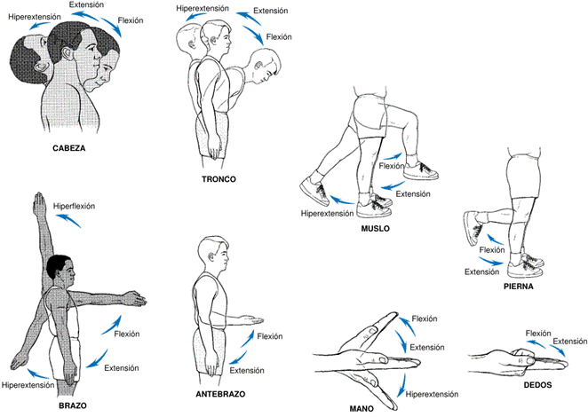
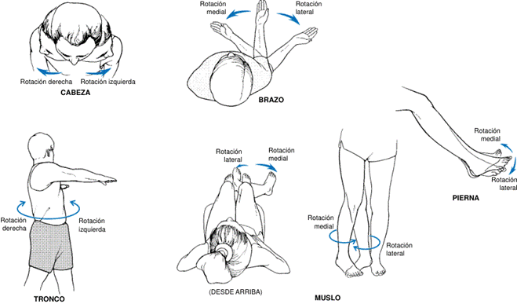
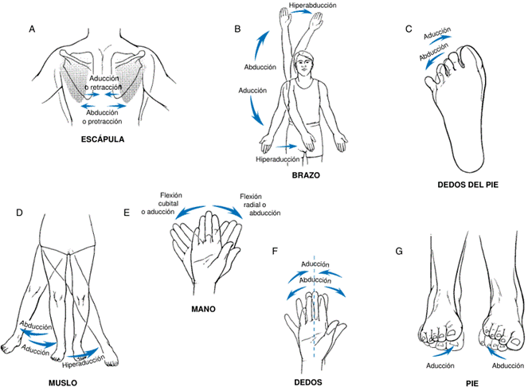
Movimientos Especializados
· Flexión lateral: Inclinación de la cabeza o el tronco hacia los lados (derecha o izquierda).
· Aducción horizontal (o flexión horizontal): Movimiento del brazo o muslo que cruza el cuerpo hacia la línea media en un plano horizontal.
· Abducción horizontal (o extensión horizontal): Movimiento del brazo o muslo que se aleja de la línea media del cuerpo en un plano horizontal.
· Inversión (del pie): El borde medial del pie se eleva, dirigiendo la planta del pie medialmente hacia el otro pie.
· Eversión (del pie): El borde lateral del pie se eleva, dirigiendo la planta del pie en dirección opuesta al otro pie.
· Pronación: En el antebrazo, hace que la palma apunte hacia posterior (desde la posición anatómica). En el pie, la superficie plantar apunta hacia lateral.
· Supinación: En el antebrazo, hace que la palma apunte hacia anterior (desde la posición anatómica). En el pie, la superficie plantar apunta hacia medial.
· Circunducción: Movimiento cónico del extremo final de un segmento, que es una combinación de flexión, aducción, extensión y abducción. Es posible en varias articulaciones como el hombro, el pie, el muslo, el tronco, la cabeza y la mano.
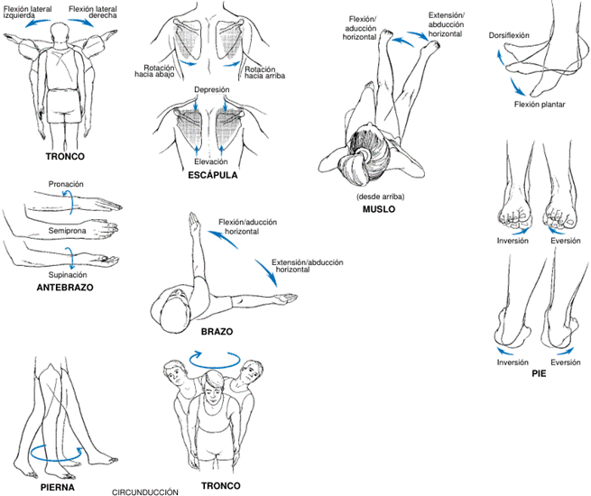
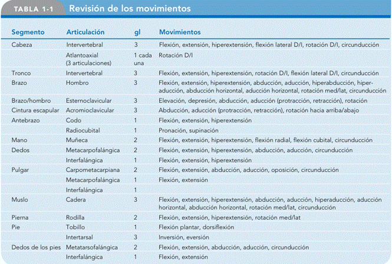
Planos y Ejes
Planos cardinales: Son tres superficies planas e imaginarias que se posicionan a través del cuerpo en ángulos rectos entre sí, interceptándose en el centro de masa del cuerpo.
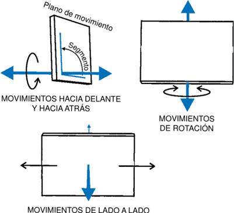
El movimiento en un plano siempre ocurre en torno a un eje de rotación perpendicular a ese plano.
· Plano Medial: Pasa por el Centro de Gravedad (CG). Divide el cuerpo en lados izquierdo y derecho. El movimiento en este plano generalmente incluye flexión y extensión. El eje perpendicular es el eje mediolateral (o frontal).
· Plano Frontal (Coronal o Caudal): Divide el cuerpo en partes frontal y trasera. El eje perpendicular es el eje anteroposterior (sagital medial).
· Plano Transverso (u Horizontal): Divide el cuerpo en partes superior e inferior. Los movimientos en este plano son las rotaciones, como la rotación de las vértebras, el hombro y la cadera, así como la pronación y supinación del antebrazo. El eje perpendicular es el eje longitudinal.
· Plano Sagital: Plano paralelo al Plano Medial.
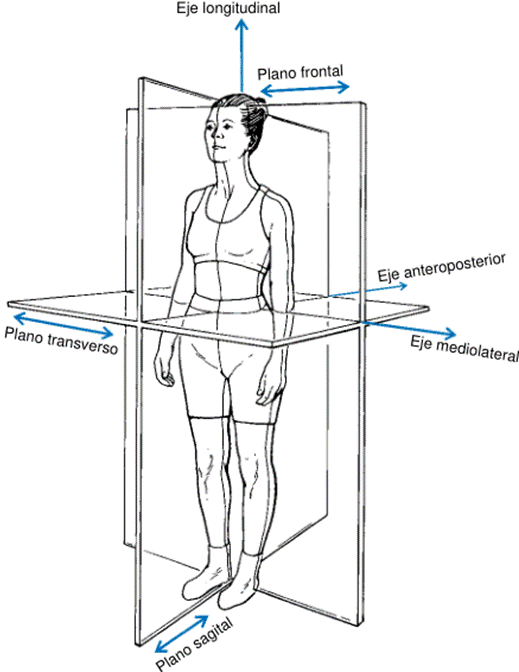
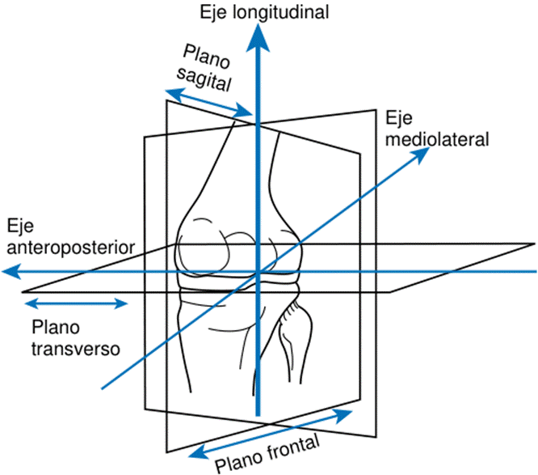
Direcciones Anatómicas
(1) Dirección coronal del centro de gravedad hacia arriba
(2) Dirección proximal: cercano al medial o algún punto de referencia
(3) Dirección distal: (se está alejando del) punto o plano de referencia. En este caso el punto de referencia es el hombro.
(4) Dirección posterior: Después del plano frontal
(5) Dirección anterior: Antes del plano frontal
(6) Dirección caudal (que va del centro hacia abajo) o hacia atrás para animales
(7) Dirección medial de exterior al centro
· media izquierda → se aproximan por la izquierda
· lateral derecha → se aproximan por la derecha
(8) Dirección lateral: Atraviesa la dirección medial y se aleja del plano medial
· Dirección lateral derecha
· Dirección lateral izquierda
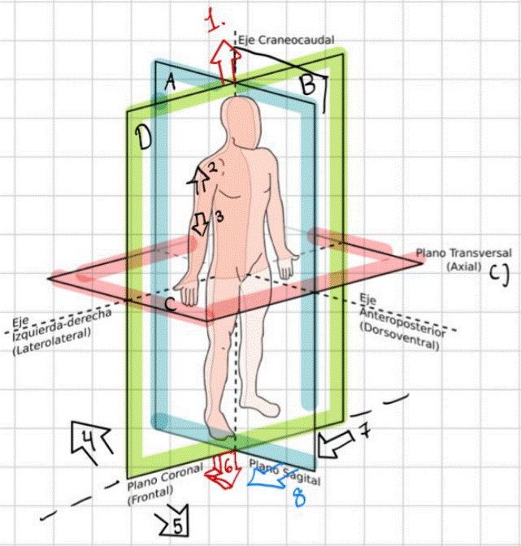
La mayoría de los movimientos humanos se producen en múltiples planos en diferentes articulaciones, no estando confinados a un solo plano, lo que les da su fluidez natural.
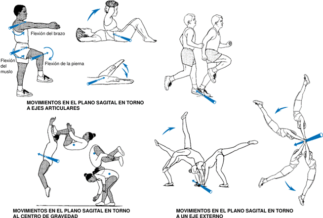
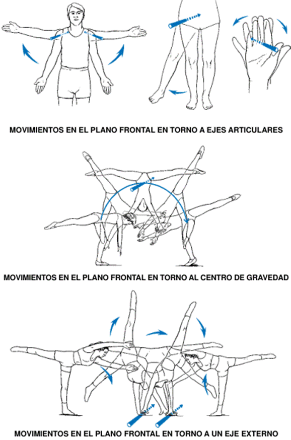
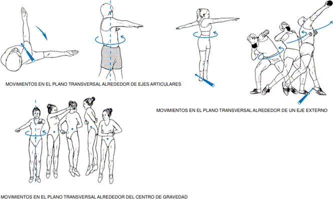
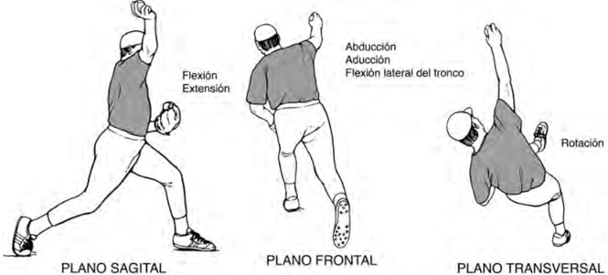
1.3 Conceptos estructurales del cuerpo humano.
EL CUERPO HUMANO
Los conceptos estructurales del cuerpo humano son fundamentales para el estudio de la biomecánica, que aplica los principios de la física al movimiento humano. El cuerpo humano se concibe como un sistema biológico sujeto a leyes físicas.
El aparato locomotor humano es un sistema jerárquico y altamente integrado cuya arquitectura anatómica posibilita la generación, transmisión y regulación de fuerzas. Principios estructurales fundamentales:
ORGANIZACIÓN GENERAL DEL CUERPO - ANATOMÍA FUNCIONAL
El cuerpo humano está compuesto por células especializadas organizadas en diversos tejidos, los cuales a su vez constituyen los diferentes órganos. Los órganos se combinan para formar sistemas que realizan funciones específicas.
El conocimiento de la anatomía, que es el estudio de la estructura del cuerpo humano, es esencial para comprender el origen del movimiento humano.
Proporciona una "lenguaje" común para describir las estructuras musculoesqueléticas y los movimientos articulares.
La anatomía funcional es el estudio de los componentes del cuerpo necesarios para lograr un movimiento o función humana.
El Sistema Esquelético
El esqueleto está compuesto por tejido óseo y cartílago, con articulaciones que permiten el movimiento. Constituye aproximadamente el 20% del peso corporal total. Se divide en dos partes principales:
· El esqueleto axial: incluye los huesos de la cabeza, cuello y tronco (cráneo, columna vertebral, costillas y esternón). Representa más del 50% del peso de la persona y generalmente se mueve más lento que otras partes del cuerpo.
· El esqueleto apendicular: incluye los huesos de las extremidades superiores e inferiores (cinturas escapular y pélvica, brazos y piernas). Estos segmentos se vuelven más pequeños y se mueven más rápido a medida que se alejan del tronco.
Funciones del tejido óseo: soporte estructural, sitios de inserción para tendones, músculos y ligamentos, función de palanca para generar movimiento, protección de órganos, almacenamiento de grasa y minerales (calcio y fosfato), y formación de células sanguíneas (hematopoyesis).
Clasificación de los huesos: Los 206 huesos del esqueleto humano se clasifican en cuatro tipos principales según su forma y función:
· Huesos largos: más largos que anchos (ej., fémur, húmero, tibia). Actúan como palancas y soportan cargas.
· Huesos cortos: aproximadamente tan largos como anchos (ej., huesos del carpo y tarso). Ofrecen soporte y absorción de impacto.
· Huesos planos: delgados y anchos (ej., costillas, escápula, cráneo, esternón, hueso ilíaco). Protegen estructuras internas y ofrecen amplias superficies para inserción muscular.
· Huesos irregulares: con formas y funciones especializadas (ej., vértebras, pelvis, clavícula). Soportan peso, disipan cargas, protegen la médula espinal y contribuyen al movimiento.
· Huesos sesamoideos: incrustados en tendones, alteran el ángulo de inserción muscular y disminuyen la fricción (rótula).
Composición del tejido óseo: Material dinámico, ligero, pero con alta resistencia a la tensión y compresión, y elasticidad significativa.
§ Compuesto por sales inorgánicas (calcio y fosfato) que proporcionan fuerza de compresión y rigidez, y colágeno (material orgánico) que brinda fuerza de tensión y elasticidad. El agua constituye 25-30% de su peso.
§ Se compone de dos tipos de tejido:
o Hueso cortical (compacto): capa externa dura y densa, constituye el 80% del esqueleto. Proporciona fuerza y rigidez, y puede soportar altos niveles de carga.
o Hueso esponjoso (trabecular): tejido interior con estructura similar a encaje y mayor porosidad. Es más débil y menos rígido que el cortical, pero las trabéculas se adaptan a la dirección del estrés, proporcionando fuerza sin añadir mucho peso.
Formación y remodelación del hueso: El hueso es adaptable y sensible a la actividad física, el desuso o la inmovilización.
· La osificación es la formación de hueso por osteoblastos y osteoclastos.
· La modelación crea hueso nuevo en diferentes regiones y tasas, cambiando la forma y el tamaño del hueso.
· La remodelación es la resorción y formación secuencial de hueso en el mismo sitio, manteniendo la masa ósea sin modificar su tamaño ni forma.
· Los osteoblastos forman hueso nuevo, mientras que los osteoclastos lo degradan.
El Sistema Muscular
Los músculos ejercen fuerza y son los principales contribuyentes al movimiento humano.
Solo tienen la capacidad de jalar, creando movimiento al cruzar una articulación.
Propiedades del tejido muscular:
· Irritabilidad: capacidad de responder a un estímulo.
· Contractilidad: capacidad de generar tensión y acortarse cuando recibe suficiente estimulación (hasta 50-70% de su longitud en reposo).
· Extensibilidad: capacidad de alargarse o estirarse más allá de su longitud en reposo, requiriendo una fuerza externa.
· Elasticidad: capacidad de regresar a su longitud de reposo después de ser estirado.
Funciones del músculo esquelético:
· Producir movimiento esquelético.
· Mantener posturas y posiciones.
· Estabilizar articulaciones.
· Soporte y protección de órganos viscerales.
· Alterar y controlar las presiones dentro de las cavidades.
· Contribuir al mantenimiento de la temperatura corporal (producción de calor).
· Controlar la entrada y salida al cuerpo (degustación, defecación, diuresis).
Estructura del músculo esquelético:
· Los músculos están organizados en grupos funcionales dentro de compartimentos definidos por fascia.
· Cada músculo individual tiene un vientre (porción central gruesa) y está cubierto por epimisio.
· Contiene fascículos (haces de fibras musculares) cubiertos por perimisio.
· Cada fascículo contiene fibras musculares cubiertas por endomisio.
· Las miofibrillas dentro de las fibras musculares contienen miofilamentos de actina (delgados) y miosina (gruesos), responsables de la contracción.
Arquitectura muscular:
· Paralela: fascículos paralelos al eje largo del músculo (ej., planos, fusiformes, en banda, radiados/convergentes, circulares).
· Peniforme: fibras en diagonal a un tendón central (ej., unipenado, bipenado, multipenado).
Uniones musculares al hueso: Directamente al periostio, a través de un tendón, o mediante una aponeurosis (tendón plano).
Unidad motora: Una neurona motora y todas las fibras musculares que inerva. Determina el control motor fino (pocas fibras por neurona) o grueso (muchas fibras por neurona). Existen diferentes tipos de unidades motoras (tipo I o lentas oxidativas, tipo IIa o rápidas oxidativas, tipo IIb o rápidas glucolíticas).
El Sistema Articular (Articulaciones)
Las articulaciones son las intersecciones entre los huesos y determinan el potencial de movimiento de un segmento.
Cartílago articular (hialino): Sustancia avascular que cubre los extremos articulares de los huesos en articulaciones con movimiento libre. Transmite fuerzas compresivas, permite movimiento con mínima fricción, redistribuye la tensión de contacto y protege el hueso subyacente.
Ligamentos: Bandas cortas de tejido conjuntivo fuerte que unen hueso con hueso. Están formados por colágeno, elastina y fibras de reticulina. Proporcionan soporte en una dirección y refuerzan las articulaciones. Pueden ser capsulares, extracapsulares o intraarticulares.
Articulaciones diartrodiales (sinoviales): Articulaciones de baja fricción, capaces de soportar un desgaste significativo, que permiten un movimiento libre.
· Características: Cápsula articular, membrana sinovial, líquido sinovial, cartílago articular, ligamentos y a veces discos o meniscos.
· Estabilidad vs. Movilidad: Las articulaciones se mantienen unidas por músculos, ligamentos, cápsula y presión negativa. Existe un equilibrio entre la estabilidad necesaria y la cantidad de movilidad.
· Tipos de articulaciones diartrodiales:
o Articulación plana o de deslizamiento: superficies planas que se deslizan (ej., huesos del tarso y carpo).
o Articulación en bisagra: movimiento en un plano (flexión, extensión); uniaxial (ej., interfalángicas, codo).
o Articulación en pivote: movimiento en un plano (rotación, pronación, supinación); uniaxial (ej., radiocubital, atloaxoidea).
o Articulación condílea: biaxial, un plano domina el movimiento (ej., rodilla, metacarpofalángicas).
o Articulación en silla de montar: dos superficies en forma de silla, dos grados de libertad (ej., carpometacarpiana del pulgar).
o Articulación de esfera y cavidad (enartrosis): movimiento en tres planos; la más móvil (ej., cadera, hombro).
Otros tipos de articulaciones:
· Articulaciones sinartrodiales (fibrosas): permiten poco o ningún movimiento (ej., suturas del cráneo, articulación tibioperonea distal).
· Articulaciones anfiartrodiales (cartilaginosas): semimóviles, unidas por cartílago (ej., vértebras, sínfisis del pubis).
Planos y Ejes Anatómicos
Se utiliza un sistema de planos y ejes universalmente aceptado para describir los movimientos humanos.
Un plano es una superficie plana bidimensional. Los planos cardinales son tres planos imaginarios que se intersectan en el centro de masa del cuerpo.
· Plano sagital: divide el cuerpo en mitades derecha e izquierda. Los movimientos en este plano ocurren en torno a un eje mediolateral. Ejemplos incluyen flexión y extensión.
· Plano frontal (coronal): divide el cuerpo en mitades anterior y posterior. Los movimientos ocurren en torno a un eje anteroposterior. Ejemplos incluyen abducción y aducción.
· Plano transverso (horizontal): divide el cuerpo en mitades superior e inferior. Los movimientos ocurren en torno a un eje longitudinal. Ejemplos incluyen rotaciones.
El movimiento en un plano siempre ocurre alrededor de un eje de rotación perpendicular a ese plano. La mayoría de los movimientos humanos reales tienen lugar en múltiples planos en diferentes articulaciones.
Estos conceptos forman la base para entender cómo se mueve el cuerpo humano, cómo interactúan sus componentes y cómo se aplican las fuerzas para producir o modificar el movimiento.
1.4 Conceptos de estática, dinámica y mecanismos.
MECÁNICA
La mecánica es la rama de la física que se encarga del estudio del movimiento de los objetos y de las fuerzas que causan ese movimiento.
Dentro de esta disciplina, la biomecánica aplica estos principios al estudio de las estructuras y fundamentos de los sistemas biológicos, incluido el cuerpo humano.
La mecánica se clasifica en varias áreas, siendo las más relevantes para la biomecánica la mecánica de cuerpos rígidos, la mecánica de cuerpos deformables y la mecánica de fluidos. La mecánica se subdivide en estática y dinámica.
ESTÁTICA
La Estática es la rama de la mecánica que examina sistemas que no están en movimiento o que se mueven a una velocidad constante.
Sus características principales son:
· Equilibrio: Los sistemas estáticos se consideran en equilibrio, lo que significa que no hay aceleración porque las fuerzas que actúan sobre ellos se neutralizan mutuamente.
· Leyes de Newton: La estática se basa en la aplicación de las leyes de Newton, específicamente la segunda ley, donde la suma de fuerzas es igual a cero (ΣF = 0), ya que la aceleración es nula.
· Análisis Cualitativo y Cuantitativo: Aunque a menudo se asocia con análisis cuantitativos mediante instrumentos especiales, los conceptos estáticos también se aplican en análisis cualitativos, por ejemplo, al observar la postura.
Aplicaciones de la estática
Determinación de Estrés y Fuerzas: Es útil para determinar el estrés sobre estructuras anatómicas, la magnitud de las fuerzas musculares necesarias para mantener una posición y la fuerza que resultaría en la pérdida del equilibrio.
Mantenimiento de Posturas: Se utiliza para evaluar cómo se mantienen posturas sin movimiento, como sentarse frente a un escritorio, donde hay fuerzas continuas para contrarrestar la gravedad.
Estabilidad y Balance: El concepto de estabilidad, definida como la resistencia a la aceleración lineal y angular, está estrechamente relacionado con el equilibrio estático. El balance es la capacidad de asumir y mantener una posición estable.
· Equilibrio Estable: Si un objeto es ligeramente desplazado por una fuerza y regresa a su posición original.
· Equilibrio Inestable: Si el objeto tiende a aumentar su desplazamiento tras ser perturbado.
· Equilibrio Neutral: Si el objeto se desplaza y asume una nueva posición sin regresar a la original.
Factores que influencian la estabilidad: Incluyen el tamaño de la base de apoyo, la altura del centro de masa y la masa del objeto.
Rehabilitación Clínica y Ergonomía: Los análisis estáticos son extensamente utilizados en ergonomía para evaluar tareas en el lugar de trabajo, como el levantamiento de objetos, y en rehabilitación para sistemas de fuerza estática (ej. tracción, arneses correctivos para escoliosis).
DINÁMICA
La Dinámica es la rama de la mecánica que examina sistemas que están en aceleración (es decir, cuando la aceleración es diferente de cero). Sus características principales son:
- Movimiento con Aceleración: La dinámica se enfoca en los movimientos donde hay un cambio en la velocidad o dirección.
- Leyes de Newton: Se basa en la segunda ley de Newton (ΣF = ma) para los casos donde la aceleración no es nula.
- Tipos de Análisis: Puede utilizar un enfoque cinemático (descripción del movimiento sin considerar sus causas: posición, velocidad, aceleración) o cinético (estudio de las fuerzas que causan el movimiento).
Se ocupa del estudio de los movimientos resultantes de la acción de fuerzas desequilibradas. Este campo se subdivide en:
· Cinemática: permite describir cuantitativa y cualitativamente las trayectorias, desplazamientos, velocidades y aceleraciones de los segmentos corporales, utilizando herramientas como el análisis de video, sistemas optoelectrónicos de captura de movimiento o modelos computacionales. Sus aplicaciones abarcan desde la evaluación de técnicas deportivas, el diseño de movimientos ergonómicos en el ámbito laboral, hasta el análisis de la marcha en pacientes con patologías neuromusculares.
· Cinética: estudia las causas que originan los movimientos, analizando fuerzas internas (contracciones musculares, tensiones ligamentarias) y externas (gravedad, fricción, reacción del suelo), además de torques articulares, potencia y trabajo mecánico. Es esencial para comprender las causas de lesiones deportivas, las sobrecargas articulares, la fatiga muscular y para diseñar estrategias de prevención y recuperación.
Aplicaciones y conceptos relacionados con la dinámica
Movimientos Complejos: Es fundamental para analizar actividades como correr, saltar o lanzar, donde las fuerzas se magnifican y son multidireccionales.
Dinámica Inversa: Es un método comúnmente utilizado en biomecánica que calcula las fuerzas y los momentos basados en las aceleraciones del objeto, en lugar de medirlos directamente. Este enfoque, a menudo llamado de Newton-Euler, evalúa los segmentos desde el más distal al más proximal.
Cinemática Lineal y Angular
Cinemática Lineal: Describe el movimiento en línea recta (traslación) o a lo largo de una trayectoria curva (curvilíneo), enfocándose en la posición, el desplazamiento, la velocidad y la aceleración sin considerar las fuerzas.
Cinemática Angular: Describe el movimiento rotacional de segmentos corporales alrededor de ejes articulares, abordando la posición, el desplazamiento, la velocidad y la aceleración angulares.
Cinética Lineal y Angular
Cinética Lineal: Estudia las causas del movimiento lineal (fuerzas), como la fuerza de reacción del suelo, la fricción, la resistencia de fluidos, las fuerzas musculares y elásticas.
Cinética Angular: Estudia las causas del movimiento angular (torques o momentos de fuerza).
MECANISMOS CORPORALES (PALANCAS Y APALANCAMIENTO)
Los Mecanismos se refieren a cómo los componentes del cuerpo interactúan para producir movimiento. En el contexto estructural, el sistema esquelético actúa como un sistema de palancas.
Palanca
Una máquina simple que magnifica la fuerza o la velocidad del movimiento. Consiste en:
· Un cilindro rígido (un hueso largo en el cuerpo).
· Un punto fijo o eje llamado fulcro (una articulación en el cuerpo).
· Una fuerza de resistencia.
· Una fuerza de esfuerzo (generalmente la fuerza muscular).
· Brazo de esfuerzo (BM): Distancia perpendicular desde la línea de acción de la fuerza de esfuerzo al fulcro.
· Brazo de resistencia (BM): Distancia perpendicular desde la línea de acción de la fuerza de resistencia al fulcro.
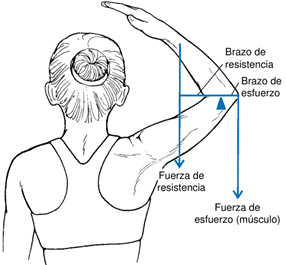
Ventaja Mecánica (VM): Es el cociente del brazo de esfuerzo sobre el brazo de resistencia. Determina si una palanca magnifica la fuerza, la velocidad o cambia la dirección del movimiento.
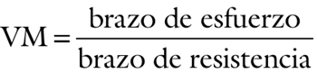
Ø Si VM = 1: El brazo de esfuerzo es igual al brazo de resistencia. La función de la palanca es principalmente cambiar la dirección del movimiento o equilibrar la palanca, sin magnificar la fuerza ni la velocidad.
Ø Si VM > 1: La palanca magnifica la fuerza.
Ø Si VM < 1: La palanca magnifica la velocidad de rotación.
Clases de Palancas (Palancas biológicas)
El sistema esquelético proporciona las palancas y los ejes de rotación en torno a los cuales el sistema muscular genera los movimientos. Una palanca es una máquina simple que magnifica la fuerza, la velocidad, o ambas, de los movimientos, y consiste en un cilindro rígido que se rota en torno a un punto fijo o eje llamado punto de apoyo.
Palanca de Primera Clase (Sistema de palanca de primer género)
El fulcro se encuentra entre la fuerza de esfuerzo y la fuerza de resistencia. Puede magnificar la fuerza, la velocidad o simplemente cambiar la dirección de la fuerza.
La estructura del esqueleto del cuerpo humano está construida como un sistema de palancas. Digamos que una palanca es un segmento rígido que posee un punto fijo alrededor del cual puede realizar la rotación cuando se aplica sobre ella una fuerza externa o interna.
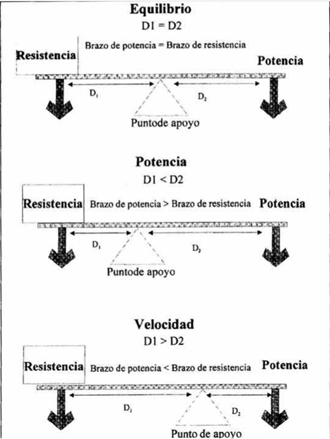
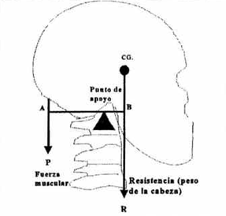
En el cuerpo humano; Los músculos agonistas y antagonistas que actúan simultáneamente a ambos lados de una articulación pueden crear una palanca de primera clase.
Un ejemplo es la acción de los músculos esplenios para equilibrar la cabeza a nivel de la articulación atlantooccipital, donde el peso de la cabeza es la fuerza de resistencia, los músculos esplenios la fuerza de esfuerzo y la articulación atlantooccipital el fulcro. Otro ejemplo es la rótula, que actúa como una polea al alterar el ángulo de tiro del músculo cuádriceps en la extensión de la rodilla. En la mayoría de los casos anatómicos, estas palancas actúan con una VM de aproximadamente 1, para balancear o cambiar la dirección de la fuerza.
Palanca de Segunda Clase (Sistema de palanca de segundo género)
La fuerza de resistencia se localiza entre el fulcro y la fuerza de esfuerzo. Ambas fuerzas actúan del mismo lado del fulcro.
El brazo de esfuerzo siempre es mayor que el brazo de resistencia, por lo que la VM siempre es mayor que 1.
Siempre magnifica la fuerza, permitiendo aplicar fuerzas de esfuerzo menores para mover resistencias significativas.
Se dice que un sistema de palancas queda definido como de segundo genero cuando el acomodo de los elementos involucrados en la palanca es el siguiente:
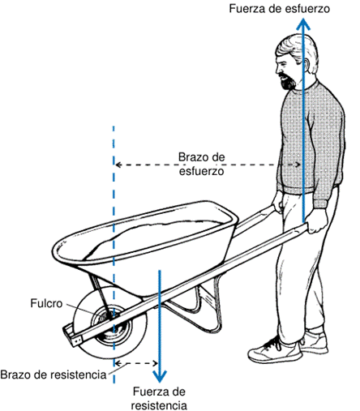
El punto de apoyo se encuentra en un extremo y la resistencia R se encuentra entre el apoyo y la potencia P.
En el cuerpo humano; Hay pocos ejemplos claros. La acción de ponerse de puntillas (elevación de pantorrillas) se considera un ejemplo, aunque es objeto de debate. Las fuentes indican que el cuerpo humano no está diseñado para aplicar grandes fuerzas a través de este tipo de palancas.
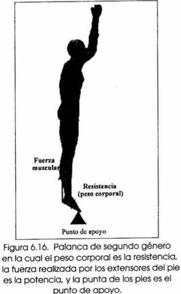
Palanca de Tercera Clase (Sistema de palanca de tercer género)
La fuerza de esfuerzo se localiza entre el fulcro y la línea de acción de la fuerza de resistencia. Ambas fuerzas actúan del mismo lado del fulcro.
El brazo de la fuerza de esfuerzo es menor que el brazo de la fuerza de resistencia, por lo que la VM siempre es menor que 1.
Magnifica la velocidad o la rapidez del movimiento, a costa de requerir una fuerza de esfuerzo mayor para vencer una resistencia moderada.
La potencia P se aplica entre el punto de apoyo y la resistencia R. Por lo tanto el Brazo De Resistencia BR siempre es mayor que el Brazo de Potencia BP.
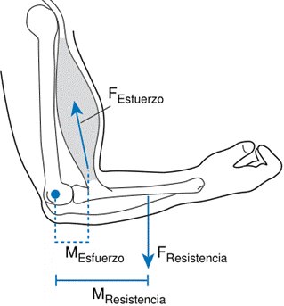
En el cuerpo humano: Este es el tipo de palanca más prominente. Casi todas las articulaciones de las extremidades actúan como palancas de tercera clase. Esto sugiere que, desde el punto de vista del diseño, el sistema musculoesquelético prioriza la velocidad de movimiento por encima de la capacidad de generar grandes cantidades de fuerza.
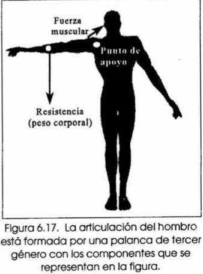
El Centro de Masa y El Centro de Gravedad
Son puntos fundamentales en la biomecánica para el análisis del movimiento de un cuerpo u objeto.
Centro de Masa (CM)
· Es el punto en el que la masa del objeto parece estar concentrada.
· Representa el punto en el cual la distribución de la masa equivale a cero.
· Se mueve como si la masa total del sistema se hallara en ese punto y todas las fuerzas externas se aplicarán al mismo.
· Es el término más general y no depende de una orientación vertical.
El Centro de Masa (CM) es un concepto que describe un punto teórico en el cual la masa de un objeto parece estar concentrada. Representa el punto alrededor del cuerpo del cual la distribución de la masa de un objeto es uniforme.
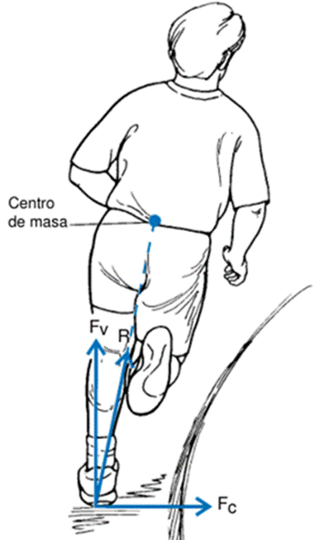
Es una propiedad intrínseca del objeto, independiente de su orientación en el espacio o de la presencia de la gravedad.
Naturaleza y Comportamiento del CM
La localización del CM es un punto teórico que puede cambiar de un instante a otro durante el movimiento de un cuerpo, debido a las posiciones rápidamente variables de sus segmentos corporales. En el análisis lineal del movimiento humano, el CM es el punto que usualmente se monitorea, ya que su movimiento indica el movimiento de la masa central del cuerpo.
Una característica notable del CM es que no siempre se encuentra dentro de los límites físicos del objeto.
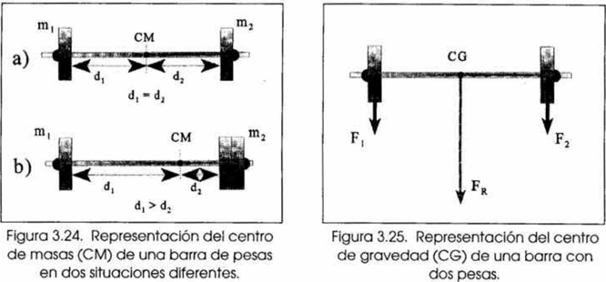
Propiedades y Características del Centro de Masa
El CM posee varias propiedades significativas que son clave para entender el movimiento de un sistema (el cuerpo humano):
· Punto de Equilibrio El CM es el punto alrededor del cual la masa está distribuida uniformemente, lo que lo convierte en el punto de balance del cuerpo. Esto implica que la suma de los torques (momentos de fuerza) alrededor del centro de masa es igual a cero (ΣTcm = 0).
· Punto Teórico y Variable Es un punto teórico cuya ubicación puede cambiar de un instante a otro durante el movimiento, debido a las rápidas modificaciones en las posiciones de los segmentos corporales.
· Ubicación Fuera del Objeto El centro de masa no siempre se encuentra dentro de los límites físicos del objeto. Por ejemplo, en una dona, el CM está en el agujero central.
· Representación del Movimiento Global El análisis del movimiento del centro de masa es equivalente a estudiar el movimiento de una partícula en la que se concentra toda la masa del sistema. Si un sistema coordinado se desplaza en el aire solo bajo la fuerza de la gravedad, su CM describirá una trayectoria parabólica.
· Efecto de Fuerzas Externas Cuando una fuerza externa se aplica a un sistema y pasa a través de su centro de gravedad, esta fuerza solo modificará el movimiento de traslación del cuerpo, sin afectar su rotación.
· Cuerpos Homogéneos En cuerpos homogéneos con un centro de simetría, este punto coincidirá con el centro de gravedad.
Método de Cálculo del Centro de Masa: Método Segmentario
El Método Segmentario es el método más común para calcular el CM corporal total. Este enfoque asume que el cuerpo está compuesto por un conjunto de segmentos rígidos y articulados, e implica conocer la masa y la localización del CM de cada segmento corporal individual, que luego se combinan para obtener la localización del CM del sistema total.
Fuentes de Datos para los Parámetros Segmentarios
La información necesaria sobre los parámetros inerciales (masa y localización del CM) de cada segmento corporal se ha obtenido a través de al menos tres métodos principales:
Estudios Cadavéricos: Estos estudios han proporcionado fórmulas de regresión o predicción para estimar la masa y la localización del CM de varios segmentos corporales.
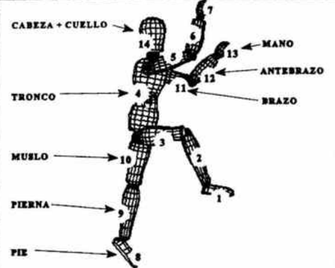
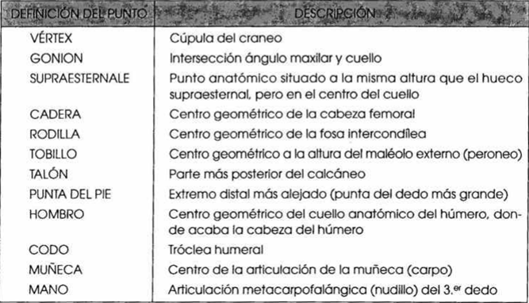
Esta es la localización de los puntos que definen los segmentos en el modelo de 14 segmentos
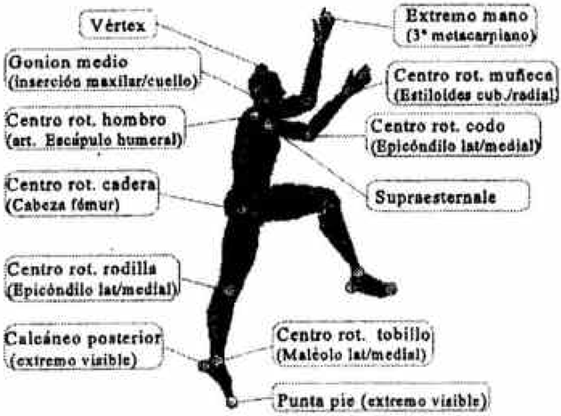
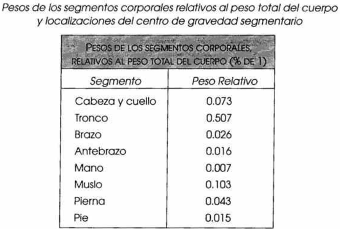
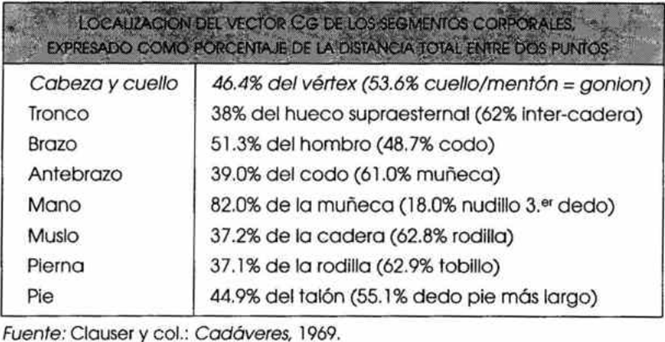
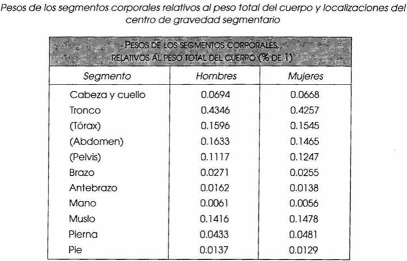
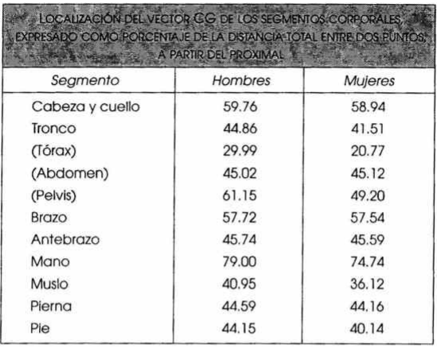
Modelos Matemáticos Geométricos: Estos modelos representan los segmentos corporales individuales como sólidos geométricos regulares. Por ejemplo, conos truncados (brazo, antebrazo, muslo, pierna y pie), cilindros (el tronco) o esferas elípticas (la cabeza y la mano). El modelo de Hanavan es un ejemplo destacado que utiliza este enfoque.
Escaneo de Masa (Gamma-scanning): Son técnicas experimentales que permiten obtener valores de la distribución de masa y, por extensión, parámetros inerciales de personas vivas. Técnicas como la Tomografía Axial Computarizada (TAC) y la Resonancia Magnética Nuclear también se han empleado para este fin.
Determinación del centro de gravedad mediante el método segmentario
Conociendo el peso relativo y la posición del centro de gravedad de cada segmento, es posible calcular el centro de gravedad total del cuerpo.
Cálculo del centro de gravedad segmentario
Para un segmento definido por:
l Punto proximal:
l Punto distal:
La longitud del segmento en cada eje (x, y) es:
Si es el coeficiente que indica la localización del centro de gravedad del segmento (en % de la longitud, contado desde el punto proximal), la posición del centro de gravedad del segmento es:
Ejemplo con el muslo
El centro de gravedad se encuentra al 37.2% de la distancia entre cadera y rodilla. Por lo tanto:
Expresión general
De forma general para cualquier segmento :
donde Es el coeficiente propio de cada segmento.
Cálculo del centro de gravedad total
El centro de gravedad total se determina aplicando la propiedad de que el momento de la fuerza resultante es igual a la suma de los momentos parciales.
Si 

 es el peso relativo del segmento respecto al peso
total
es el peso relativo del segmento respecto al peso
total

 (normalmente expresado en % de 1), se tiene:
(normalmente expresado en % de 1), se tiene:
Dado que:
la fórmula queda como:
Esto se aplica a cada componente (X, Y, Z) del vector posición.
Centro de Gravedad (CG)
· Es el punto de origen del vector de peso de un individuo, que es el producto de la masa y la aceleración debida a la gravedad.
· Es un punto en torno al cual todas las partículas del cuerpo están distribuidas de forma uniforme.
· Se define como el punto fijo de un cuerpo material donde actúa la fuerza gravitatoria resultante.
· Corresponde al punto sobre el cual se equilibra la fuerza gravitacional.
· A diferencia del CM, el CG se refiere específicamente a la dirección vertical, ya que es la dirección en la que actúa la gravedad.
El Centro de Gravedad (CG) es el punto sobre el cual se equilibra la fuerza gravitacional que actúa sobre un objeto. Puede considerarse como el origen de la fuerza gravitatoria resultante que actúa sobre la masa de un cuerpo.
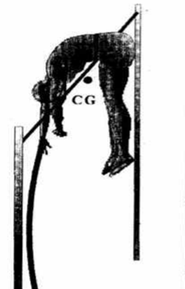
Relación y Distinción con el Centro de Masa (CM)
A menudo, los términos Centro de Gravedad y Centro de Masa se utilizan de forma intercambiable, y no sin razón, ya que en la práctica suelen coincidir. Sin embargo, conceptualmente son distintos:
|
El CM se refiere a un punto relacionado exclusivamente con la distribución de las masas del sistema, independientemente de la gravedad. |
El CG se refiere al punto de origen de la fuerza resultante con la que la gravedad atrae a una masa. Se refiere específicamente a la dirección vertical en la que actúa la gravedad, mientras que el CM no depende de una orientación vertical. |
|
No obstante, en la mayoría de los casos y para propósitos prácticos en la biomecánica terrestre, el centro de gravedad corresponde al centro de masa, siempre y cuando la aceleración de la gravedad sea uniforme en todos los puntos del sistema de estudio, lo cual ocurre casi siempre en Biomecánica Deportiva. |
|
Propiedades y Características del CG
El CG del cuerpo humano es un punto dinámico que puede moverse constantemente debido a los cambios en la posición de los segmentos corporales. Las propiedades más significativas del CG incluyen:
· Análisis Equivalente a una Partícula: El estudio del movimiento del CG es equivalente a analizar el movimiento de una partícula en la que se concentra toda la masa del sistema. Esto permite estudiar movimientos rectilíneos o circulares del sistema a partir del movimiento de su CG.
· Trayectoria Parabólica en el Aire: Cuando un sistema coordinado (como un cuerpo humano) se desplaza a través del aire sin más fuerzas que la gravedad, su CG describe una trayectoria parabólica, similar a la de una partícula aislada.
· Equilibrio y Suma de Momentos Nula: El CG es el punto donde se produce un momento resultante nulo, lo que permite localizarlo balanceando el cuerpo sobre un pivote. Si la suma de los momentos de las fuerzas que actúan sobre un cuerpo con respecto a este punto es nula, el cuerpo está en equilibrio.
· Relación con el Centro de Simetría: En cuerpos homogéneos y con un centro de simetría, el CG coincide con este centro geométrico.
· CG Fuera de la Superficie del Cuerpo: Al igual que el CM, el CG de un cuerpo o sistema coordinado puede estar situado fuera de la superficie del cuerpo. Un ejemplo es un saltador de pértiga al franquear el listón, donde su CG puede pasar por debajo de este.
· Determinación del CG Total del Sistema: Si se conocen el centro de gravedad y el peso de los cuerpos que componen un sistema, se puede determinar el centro de gravedad total del sistema.
Métodos de Determinación del Centro de Gravedad (CG)
La determinación del CG del cuerpo humano ha evolucionado con la tecnología. Aparte del método segmentario (ya descrito para el CM y aplicable para el CG cuando la gravedad es uniforme), se han empleado históricamente otras técnicas experimentales:
Método de la Plataforma Rectangular de Momentos (Reynolds y Lovett)
Este sistema (diseñado en 1909) consiste en una plataforma rectangular homogénea que descansa sobre un pivote de rozamiento nulo en un extremo y sobre una balanza en el otro.
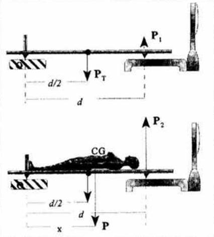
El procedimiento implica
1. Se registra el peso de la plataforma (Pₚ) y luego el peso de la plataforma más el sujeto (Pₑ).
2. Se coloca al sujeto sobre la plataforma en la posición deseada, y se mide el peso total en la balanza (Ps).
3. Conociendo el peso del sujeto (P) y las lecturas de la báscula, y aplicando las ecuaciones de equilibrio, se puede determinar la línea de aplicación donde se sitúa el CG del sujeto en la posición adoptada.
La distancia (x) del centro de gravedad del sujeto desde el pivote se calcula usando la siguiente expresión, basada en el equilibrio de momentos:
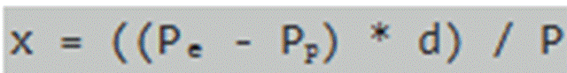
Donde:
· X es la distancia del CG del sujeto desde el pivote.
· Pₑ es la lectura de la balanza con el sujeto y la plataforma.
· Pₚ es la lectura de la balanza con solo la plataforma.
· d es la distancia entre los pivotes.
· P es el peso del sujeto (calculado como Pₑ - Pₚ).
Método de la Plataforma Equilátera de Basler
Esta técnica es similar a la de Reynolds y Lovett, pero permite determinar el centro de gravedad de un sujeto en dos dimensiones. Utiliza una plataforma equilátera homogénea que descansa sobre un pivote en uno de sus vértices (O) y sobre una balanza en otro vértice (A).
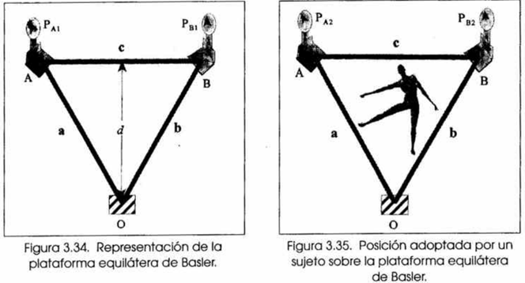
Diseño y Propósito
El sistema consiste en una plataforma equilátera homogénea con lados a, b y c, y una altura d. Esta plataforma se apoya en tres puntos:
· Un pivote de rozamiento nulo en uno de sus vértices (O).
· Una balanza (Pᵧ₁) que registra la fuerza en un segundo vértice (A).
· Una segunda balanza (Pᵧ₁) que registra la fuerza en un tercer vértice (B).
Es importante señalar que, en el ejemplo proporcionado, Pₓ₁ y Pᵧ₁ se refieren a las lecturas iniciales de las básculas antes de que el sujeto se suba a la plataforma, mientras que Pₓ y Pᵧ son las lecturas con el sujeto.
El objetivo de este método es determinar el CG de deportistas en posiciones específicas que adoptan durante la ejecución de un gesto deportivo.
Procedimiento
1. Se obtienen los puntos articulares del sujeto a partir de una fotografía o una película cinematográfica y se sitúan, a escala real, en la plataforma.
2. Se toman las lecturas iniciales de las básculas (Pₓ₁ y Pᵧ₁) antes de que el deportista se suba a la plataforma.
3. El deportista adopta la posición deseada en la plataforma, y se realizan las segundas lecturas de las básculas (Pₓ y Pᵧ).
4. Mediante la aplicación de las ecuaciones de equilibrio de momentos, se determina la intersección de dos líneas de aplicación, que corresponde a la posición del CG.
Cálculo del Centro de Gravedad
El cálculo se basa en el principio de que, en una situación de equilibrio, la suma de los momentos de fuerza alrededor de cualquier eje de giro debe ser cero.
Para determinar la coordenada x (distancia del CG desde el lado 'a' de la plataforma), se considera el lado 'a' como el eje de giro. La fórmula es:
Donde:
· Pᵧ es la lectura de la balanza en el vértice B con el sujeto.
· Pᵧ₁ es la lectura de la balanza en el vértice B sin el sujeto.
· d es la altura de la plataforma.
· P es el peso total del sujeto.
Para determinar la coordenada y (distancia del CG desde el lado 'b' de la plataforma), se considera el lado 'b' como el eje de giro. La fórmula es:
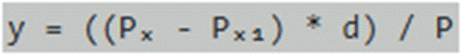
Donde:
· Pₓ es la lectura de la balanza en el vértice A con el sujeto.
· Pₓ₁ es la lectura de la balanza en el vértice A sin el sujeto.
· d es la altura de la plataforma.
· P es el peso total del sujeto.
· El CG se localiza en el punto de intersección de las dos líneas que distan x e y de los lados a y b de la plataforma, respectivamente.
Articulaciones
Los principales componentes interactúan de manera sinérgica:
· Sistema esquelético: estructura rígida que proporciona soporte, protección de órganos vitales y constituye el sistema de palancas que facilita la locomoción y la manipulación de objetos.
· Sistema muscular: principal generador de fuerzas internas, responsable tanto de la producción de movimiento segmentario como de la estabilización articular.
· Articulaciones: unidades funcionales que conectan los huesos y determinan los grados de libertad del sistema, condicionando los patrones de movilidad y su eficiencia.
· Tejidos conectivos: tendones, ligamentos, cartílagos y fascias que actúan como elementos de transmisión de carga, estabilización y protección frente a esfuerzos excesivos.
Cadenas Cinemáticas
Este término de ingeniería se refiere a una serie de cuerpos rígidos unidos. En biomecánica, se adaptó para describir los segmentos vinculados del cuerpo humano como una "cadena cinética".
· Cadena Cinética Abierta: Un movimiento donde el segmento distal es libre de moverse (ej., extensión de rodilla).
· Cadena Cinética Cerrada: Un movimiento donde el movimiento del segmento distal está restringido por una resistencia externa considerable (ej., prensa de piernas, sentadilla).
· Aunque ampliamente usada, la clasificación de movimientos como cadenas cinéticas abiertas o cerradas es objeto de debate debido a la naturaleza vaga de su definición.
· Una cadena cinemática se forma al combinar los grados de libertad en varias articulaciones para producir una habilidad o movimiento. Representa la suma de los grados de libertad en las articulaciones adyacentes necesarios para la acción.
2. Elementos estructurales del cuerpo humano (CH).
2.1 Sistema esquelético.
2.2 Sistema de eslabones del CH.
2.3 Articulaciones.
2.4 Biomecánica de huesos, cartílagos, ligamentos y tendones.
2.5 Biomecánica de los músculos.
3. Modelado estático, cinemática y dinámico.
3.1 Determinación de fuerzas. Sistemas estáticamente determinados e indeterminados.
3.2 Métodos para la medida de fuerzas.
3.3 Análisis del movimiento mediante fotogrametría.
3.4 Definición del modelo de eslabones del CH.
3.5 Análisis dinámico del movimiento.
3.6 Biomecánica de la marcha.
LOCOMOCIÓN HUMANA
La biomecánica de la marcha se refiere al estudio de la locomoción humana, que incluye caminar y correr, mediante la aplicación de las leyes de la física.
El Análisis de la Marcha es la medición y evaluación cuantitativa del movimiento humano, con el objetivo de entender cómo las contracciones musculares se transforman en movimientos funcionales (caminar, correr, subir escaleras) y cómo se relacionan los sistemas de control motor con la dinámica de la marcha.
CICLO DE LA MARCHA
La marcha humana se describe como un movimiento cíclico.
El ciclo locomotor o zancada se define como el intervalo desde el primer instante en que un pie hace contacto con el suelo hasta el siguiente contacto del mismo pie.
Fases del Ciclo
El ciclo se divide en dos fases principales:
Fase de Apoyo (Stance Phase):
El pie está en contacto con el suelo.
Representa aproximadamente el 60–66% del ciclo al caminar y 30–59% al correr. Subdivisiones:
· Choque del talón o fase de carga inicial (absorción del impacto).
· Apoyo medio (el peso corporal se desplaza sobre el pie).
· Fase de propulsión: elevación del talón y despegue de los dedos.
En la caminata existe un período de doble apoyo, donde ambos pies están en contacto con el suelo.
Fase de Balanceo (Swing Phase):
· El pie no está en contacto con el suelo.
· Representa el 34–40% del ciclo al caminar y hasta 70–80% en el sprint.
· Subdivisiones: balanceo inicial, balanceo medio y balanceo terminal.
· En la carrera aparece una fase aérea, donde ningún pie toca el suelo.
PARÁMETROS ESPACIALES Y TEMPORALES DE LA MARCHA
· Paso (Step): Porción de la zancada desde un evento en una pierna hasta el mismo evento en la pierna opuesta.
· Zancada (Stride): Intervalo entre dos contactos consecutivos del mismo pie.
· Longitud de la zancada: Distancia cubierta en una zancada.
· Longitud del paso: Distancia entre el contacto de un pie y el del otro.
· Cadencia: Número de pasos por minuto.
· Frecuencia de zancada: Número de zancadas por minuto.
· Tiempo de ciclo: Duración de una zancada.
· Relación con la velocidad
La velocidad de marcha se determina como:
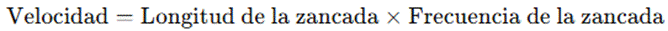
Caminata:
· Velocidad: 0.67–1.32 m/s
· Longitud de zancada: 1.03–1.35 m
· Cadencia: 79–118 pasos/min
Carrera:
· Velocidad: 1.65–4.00 m/s
· Longitud de zancada: 1.51–3.00 m
· Cadencia: 132–200 pasos/min
ANÁLISIS CINEMÁTICO
El Análisis Cinemático describe posiciones, velocidades y aceleraciones sin considerar las fuerzas.
Plano sagital: mayor rango de movimiento en la marcha y carrera.
Tobillo: oscila aprox. 20°.
· Choque del talón: flexión plantar 5–6°.
· Apoyo medio: dorsiflexión 10–12°.
· Despegue: flexión plantar 15–20°.
Articulaciones metatarsofalángicas: extensión marcada en la fase de propulsión.
Articulación tarsal media: móvil al inicio para absorber impacto y rígida al final para la propulsión.
ANÁLISIS CINÉTICO
La cinética estudia las fuerzas que generan el movimiento.
Fuerzas de Reacción del Suelo (FRS):
· Componente vertical:
o Caminata: 1–1.2 × peso corporal (PC).
o Carrera: 2–5 × PC.
o Forma bimodal característica en la marcha.
· Componente anteroposterior:
o Negativa en fase inicial (frenado).
o Positiva en fase final (propulsión).
o Magnitud: ~0.15 × PC.
Dinámica inversa: Permite calcular torques articulares a partir de las FRS.
Potencia muscular:
· Negativa → absorción de energía (acción excéntrica).
· Positiva → generación de energía (acción concéntrica).
· Cadera: extensión controlada por flexores en apoyo tardío.
· Rodilla: cuádriceps excéntricos en carga inicial.
Energía mecánica: La marcha se asemeja a un péndulo invertido, con intercambio entre energía cinética y potencial (ahorro de hasta 65% del trabajo muscular).
ACTIVIDAD MUSCULAR (ELECTROMIOGRAFÍA - EMG)
Cadera y pelvis:
· Glúteo medio y mínimo activos al choque del talón para estabilizar la pelvis.
· Glúteo mayor y tensor de la fascia lata también colaboran en la carga inicial.
Tobillo: dorsiflexores activos en fase de carga.
Rodilla y pie:
· Cuádriceps excéntricos y luego concéntricos en la propulsión.
· Isquiotibiales concéntricos en el despegue de los dedos.
Balanceo: iliopsoas y recto femoral impulsan la pierna hacia adelante.
FACTORES QUE MODIFICAN LA MARCHA
Condiciones clínicas:
· Discapacidad física → velocidad baja, pasos cortos, mayor fase de apoyo.
· Parálisis cerebral → marcha lenta, cadencia reducida, doble apoyo prolongado.
Condiciones ambientales:
· Superficies resbalosas → pasos cortos y ángulo de contacto reducido.
Velocidad preferida: alrededor de 2 m/s, donde se transita de caminar a correr.
TÉCNICAS DE MEDICIÓN
Métodos básicos: cronómetro y cinta métrica.
Instrumentación avanzada:
· Monitores fotoeléctricos.
· Interruptores plantares (foot switches).
· Plantillas instrumentadas y pasarelas sensibles.
· Cámaras de video y sistemas de captura de movimiento.
· Plataformas de fuerza para medir FRS.
APLICACIONES DE LA BIOMECÁNICA DE LA MARCHA
· Diagnóstico clínico: evaluación de fuerza y control motor en rehabilitación.
· Medicina deportiva: análisis de patrones de movimiento para detectar lesiones y monitorear recuperación.
· Prótesis y órtesis: diseño de dispositivos que imiten la función mecánica del miembro perdido.
4. Biomecánica articular.
4.1 Las articulaciones y su operación.
4.2 Analogías mecánicas de las articulaciones.
4.3 Articulación de la cadera.
4.4 Articulación de la rodilla.
4.5 Otras articulaciones.
4.6 Prótesis en articulaciones.
5. Biomecánica de la columna vertebral (CV).
5.1 Función, elementos constituyentes y anatomía de la columna vertebral.
5.2 Unidad funcional de la CV.
5.3 Deterioro de la CV.
6. Dinámica de fluidos cardiovasculares.
6.1 Modelos mecánicos cardiacos.
6.2 Dinámica de las válvulas.
6.3 Modelado de la mecánica de prótesis vasculares.
6.4 Dispositivos de asistencia cardiaca.
6.5 Fisiología del sistema circulatorio.
6.6 Modelado de válvulas artificiales.
6.7 Modelado de flujo considerando arterias deformables.
7. Bibliografía
JOSEPH Hamill Biomechanical basis of human movement